单细胞转录组-cellchat细胞通讯结果解读
原文：https://mp.weixin.qq.com/s?__biz=MzAwMzIzOTk5OQ==&mid=2247529343&idx=2&sn=905ed3c49959e3527adbaaf2800e29a7&chksm=9b3c0a2fac4b8339f9cba942a8501d8414b127245b0f5f5b786f3752a5e6d6d76a991dc14db7#rd 合集：单细胞教程全收录
成功PI需合理分配人员：硕士掌握R、Python等基础技能，兼顾论文与组内任务；博士和青椒主攻基因组、转录组等主流组学，独当一面；PI则需了解前沿技术。但多方向培训成本高，组学大讲堂超级VIP 618活动，覆盖主流组学分析技能，一对一答疑，支持多人学习，赠云服务器，专业培训一步到位！
单细胞实验设计让我们可以更迅速且准确的掌握每个细胞涵盖的讯息，把实验做好做满之外，如何解读实验设计并完整阐述一个故事，又是后期分析的另一项大考验。近期有不少 paper 提到 Cell-Cell communication (Ligand-Receptor)，透过 Ligand-Receptor 推测“细胞群”之间的互动关係。分析细胞通讯的工具很多，比较著名的有cellphonedb和CellChat ，CellChat相比其他软件，多了几个优点：(1)考虑多种subunits/ cofactors/ 聚合物等 (2)附带注释database并支持可视化结果图 (3)支持物种为人或者小鼠；
CellChat数据库介绍：
CellChat细胞通讯数据库通过整合KEGG和文献，构建了细胞通讯数据库cellchatDB，数据库主要包括三部分，（1）旁分泌、自分泌的信号互作。（2）胞外基质-受体互作。（3）细胞直接互作。在这些直接互作的蛋白外，cellchat还将可溶性激动剂、拮抗剂等互作引子考虑在内。
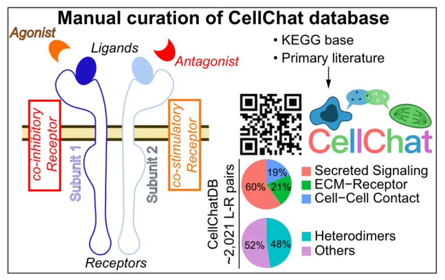
细胞通讯分析原理
细胞通讯的可能性通过配受体基因表达量计算，如果配体是复合物，则取表达量的几何平均数，如果受体是复合物，则取表达量的几何平均数。对于受体配体的复合物来说，只要其中一个亚基的表达量为0，则认为这对受体配体对不起作用。细胞通讯显著性计算采用置换检验来检验每个受体配体的显著性。置换检验的思路为随机置换细胞类群的标签，以此标签计算特定配体受体对的通讯可能性。置换的次数默认为100次，比较置换后的特定配体受体对通讯的可能性和真实的通讯可能性，计算显著性p值。
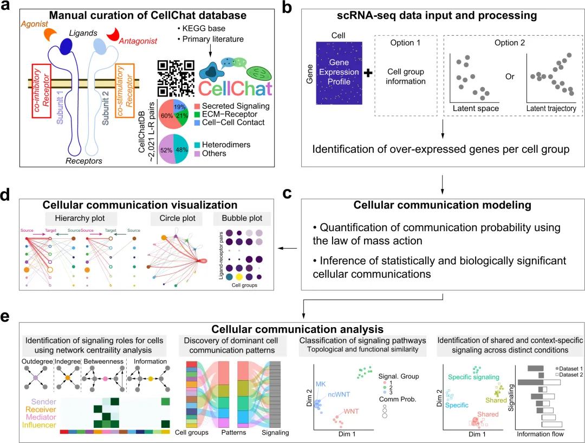
细胞通讯结果可视化
目前CellChat提供了多种图形来对结果进行可视化，包括但不限于：
-
Hierarchical plot （层次聚类图）
-
Chord diagram （和弦图）
-
Circle plot （环状图）
-
Bubble plot （气泡图）
此外结果的可视化也分为在单个受体-配体层次与代谢通路（多个受体-配体整合）层次，上游分析的相关结果分别存储在cellchat@net和cellchat@netP中。还有细胞通讯模式分析结果可视化。
1 受体-配体层次网络可视化
1.1 细胞间受体配体可视化
这个部分的可视化主要是统计不同细胞类群之间的受体-配体对数（interactions）和通讯强度（strength）。线越粗越互作越强，线的颜色和点的颜色相同表示点为source细胞，另一端为target细胞；
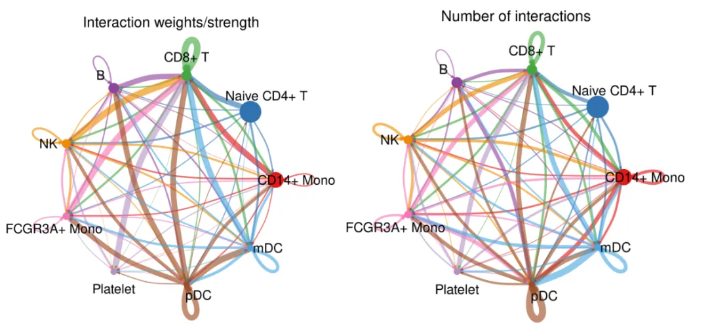
单个细胞类群与其他细胞通讯网络
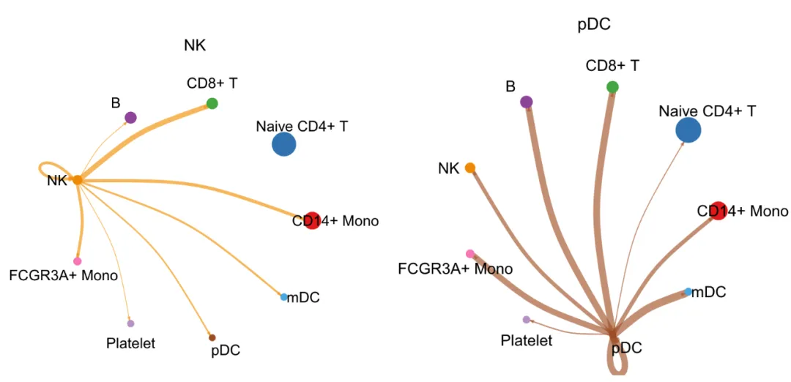
具体细胞间配体受体对可视化
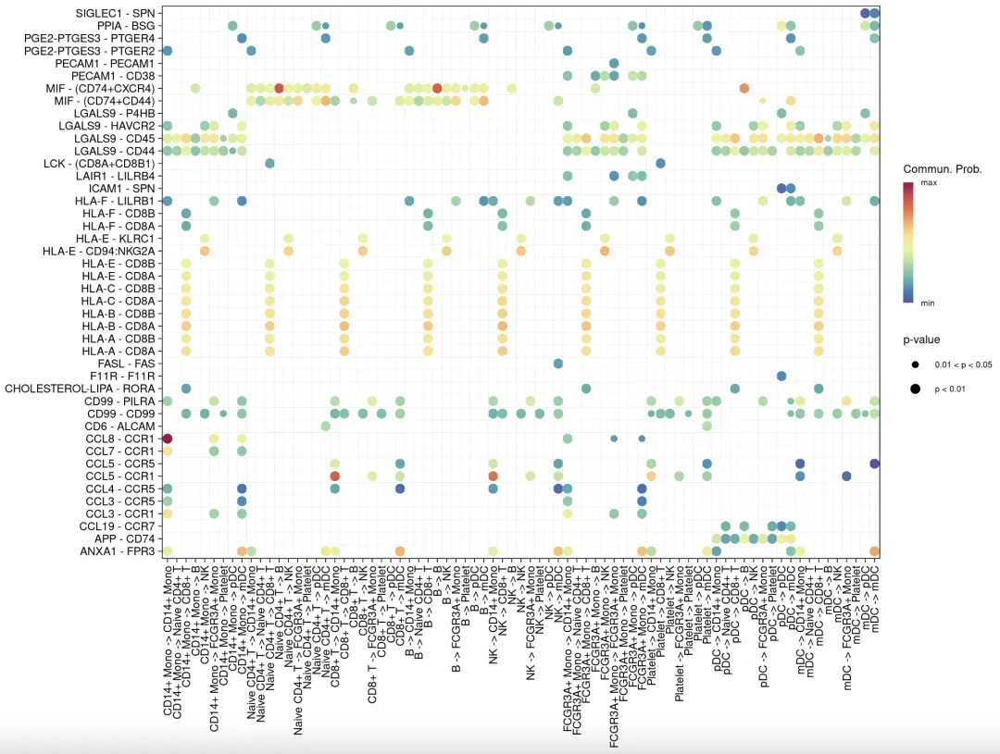
2 信号通路层面可视化展示
2.1 信号通路中分泌讯号对比展示
分泌传导物质的方式主要可以分为 autocrine（自分泌）/ paracrine（旁分泌）。每个颜色的点就代表一个细胞群，实心代表 Source、空心代表 Target，每一条线的粗细代表连结强度。如果Source/ Target 颜色同，自己连到自己且无其他连出去的路径则代表是 autocrine，而若连到很多别的颜色则可能代表传导路径当中是 paracrine的形式传递物质（如果不易理解可参考Circel Plot，若有线绕回自己，则表示该群细胞是 autocrine）另外，例如信号通路 MIF 呈现结果如下图，左边的souce细胞类型为自己设置的感兴趣的细胞类群。
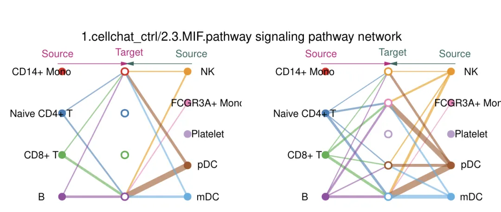
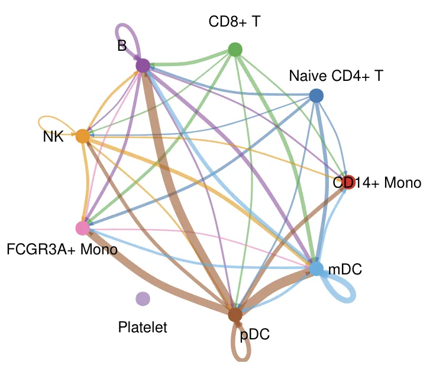
MIF信号通路中的贡献度较大的配受体：
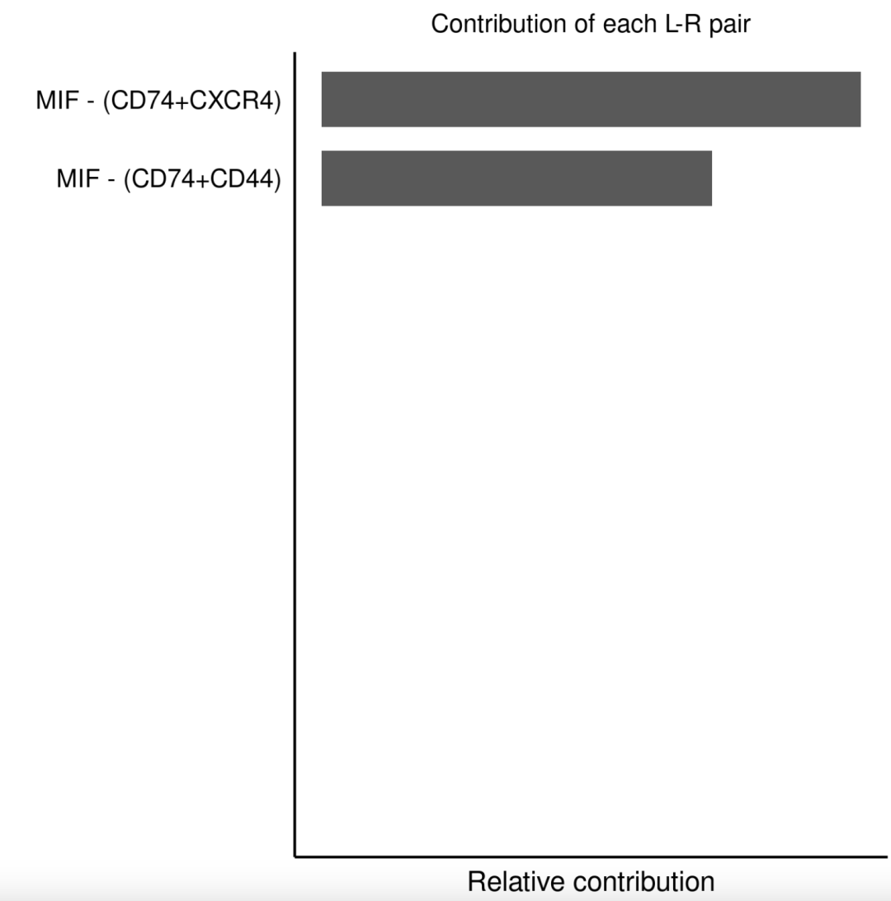
2.2 信号通路-细胞通讯相似性分析
通过细胞通讯网络的聚类分析相似性，细胞通讯网络的相似性，包括功能相似性和结构相似性，构建SNN(shared nearest neighbor)，进行umap降维，最后进行聚类，下图图展示了根据功能相似性和结构相似性的聚类结果。途中不同的点表示不同的信号通路，距离越近表示具有相似的通讯网络；
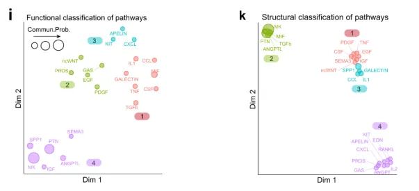
3 细胞通讯角色识别
计算出细胞通讯的可能性后，我们同样关心特定细胞类群在细胞通讯网络中承担的角色。根据网络拓扑知识，我们可以将细胞类群承担的任务角色分为out-degree, in-degree, betweenness和information四种角色。承担Out-degree角色的细胞类群被称为sender，这个角色被认为主要向外分泌配体传输信息，通过累加所有向外分泌配体的细胞通讯方式的可能性，得到sender的可能性(分数)。承担in-degree角色的细胞类群被称为receiver，这个角色被认为主要接受受体刺激接受信息，通过累加所有接受配体刺激的细胞通讯方式的可能性，得到receiver的可能性(分数)。承担betweenness角色的细胞类群被称为mediator，这个角色被认为作为gatekeeper控制两个细胞类群间通讯，通过flow betweenness score计算作为mediator的可能性(分数)。承担Information角色的细胞类群被称为Influencer，这个角色被认为作为能够控制细胞通讯间的信息流，通过计算information centrality score作为mediator的可能性(分数)。下面这张图展示了各个角色的简图，热图展示了计算承担各种角色的可能性，我们可以知道细胞类群可以承担不止一种角色，也可以一种角色也不承担。
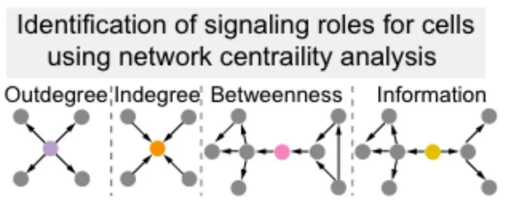
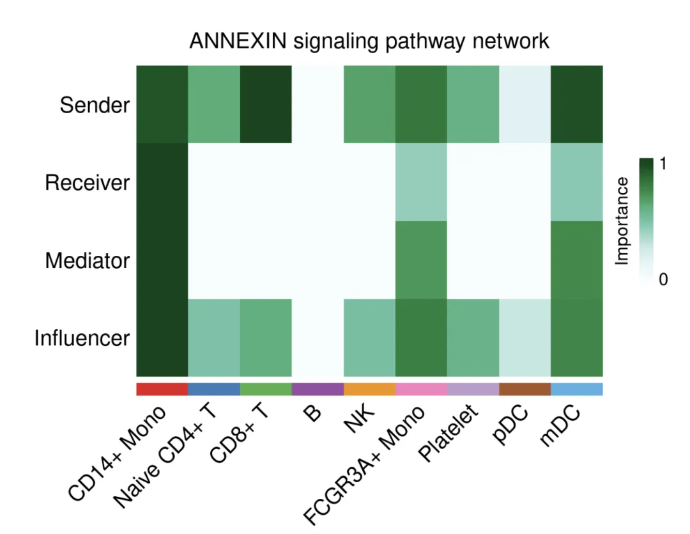
识别外发(Outgoing)或接收(Incoming)信号角色的细胞群。我们也可以解答哪些信号对某些细胞组的外发或接收信号贡献最大的问题。以及哪些信号通路共享大小：
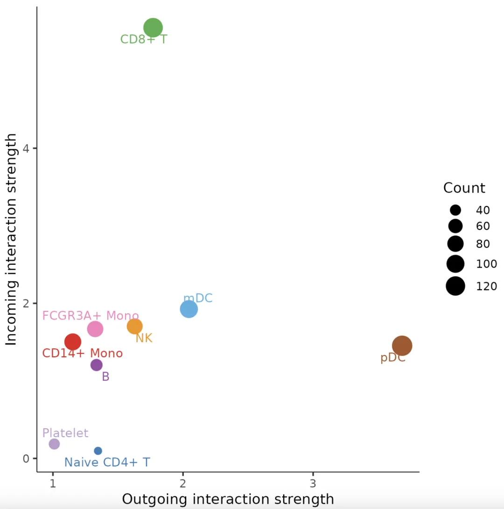
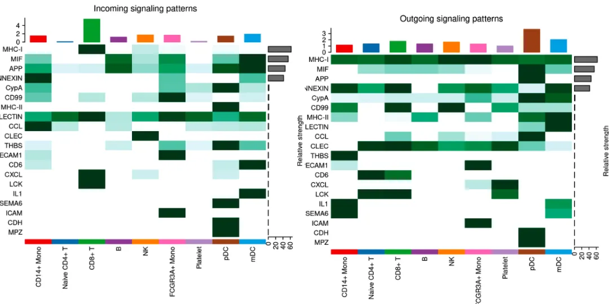
4 细胞通讯模式识别
Cellchat将每个受体配体对依据文献归类到二百多个个signaling pathways中，那么对于每个signaling pathway组成的通讯网络中有多对受体配体对。对于不同的signaling pathway组成细胞通讯网络，享有不同的通讯模式。下图 Outgoing 表示计算出的 Cell-Cell communication 有向网路中做为 secreted 传出，Incoming 则是 target。左图可以看到 MYL 类型的细胞大部分具有一样的 pattern，而这些pattern 是因为这几个 TGFb/ IL1/ CSF/ TNF/ RANKL 可能有类似的输出；右图同理。
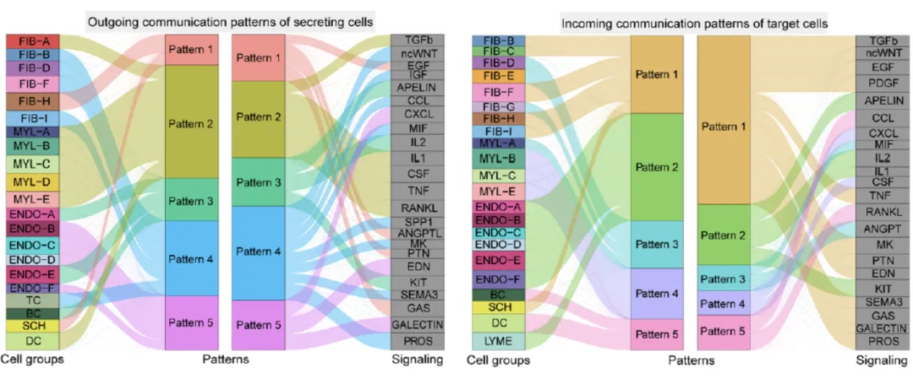
END